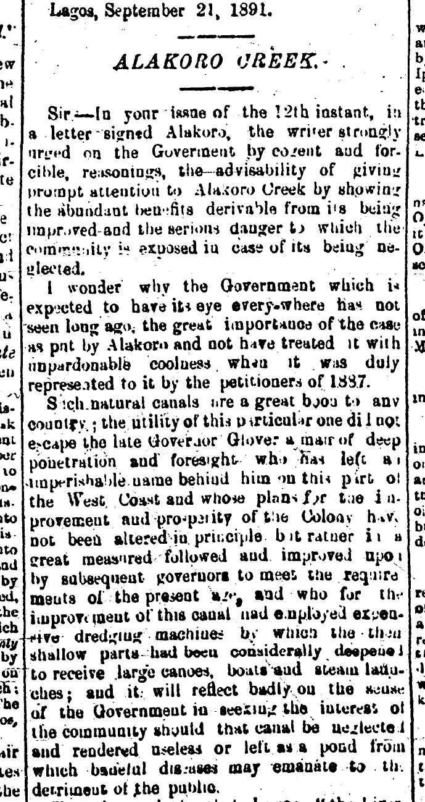

Alakoro: Island or Swamp?
The areas around Alakoro, and by extension Ẹlẹgbata, were low lying and prone to flooding after heavy rains. This post looks at the before and after of the efforts to rid this part of Lagos of the mosquito larvae that settled in the swamps. Though it worked and made the areas healthier, it erased two important natural landmarks.
Land reclamation
Alakoro Island wasn’t technically an island. Alakoro Creek was an inlet that caused the lower lying sections of land north of Ọffin to be flooded and swampy. In those days, one had to cross Alakoro bridge to get from Idumọta to Itọlọ.
There were reports that John Glover had planned to cut canals through the connect Alakoro, Ẹlẹgbata and Oke Arin swamps. These swamps were considered by many to be an eyesore in the region, and complicated the sanitary conditions in the areas. Lagosians had been petitioning for the colonial government to fill in the swamp since at least 1884.
An 1888 Sanitary Report of the colony noted that the swamps at Alakoro were among the “greatest nuisances in the town, and being situated in the most most crowded districts, must have a deleterious effect on the health of the residents.”
Anti-Malaria campaigns
This process changed a number of old streets including Balogun and Kosseh streets, transforming them completely. Scroll down for images of before and after shots below. In some cases, new streets were created, eg connecting Customs to Carter Bridge.
These swamps were also breeding grounds for mosquito larvae. Heavy rains in Lagos often lead to the shallow pools and ditches, filled with larvae. The leveling and grading of Alakoro helped rid this part of the island of its persistent mosquito problem. Together, nearly 17 1/2 acres of swamp was reclaimed at Alakoro and Ẹlẹgbata.
Kosseh and BALOGUN Streets
Before and After Relamation
 Before: Shots of Balogun and Kosseh St and the swamp
Before: Shots of Balogun and Kosseh St and the swamp